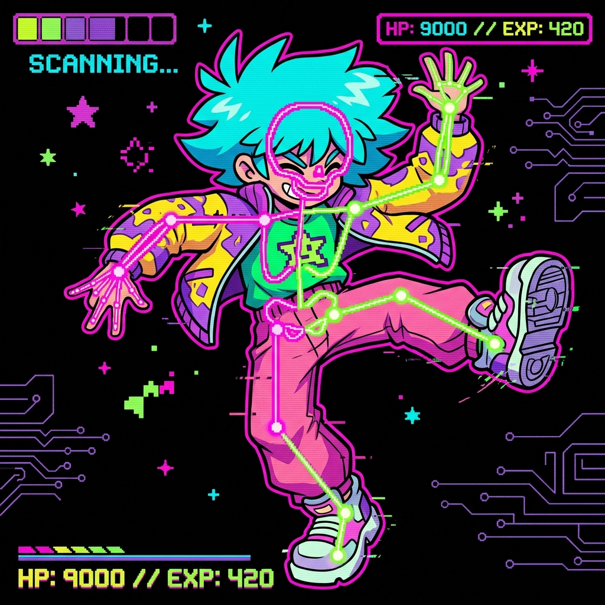
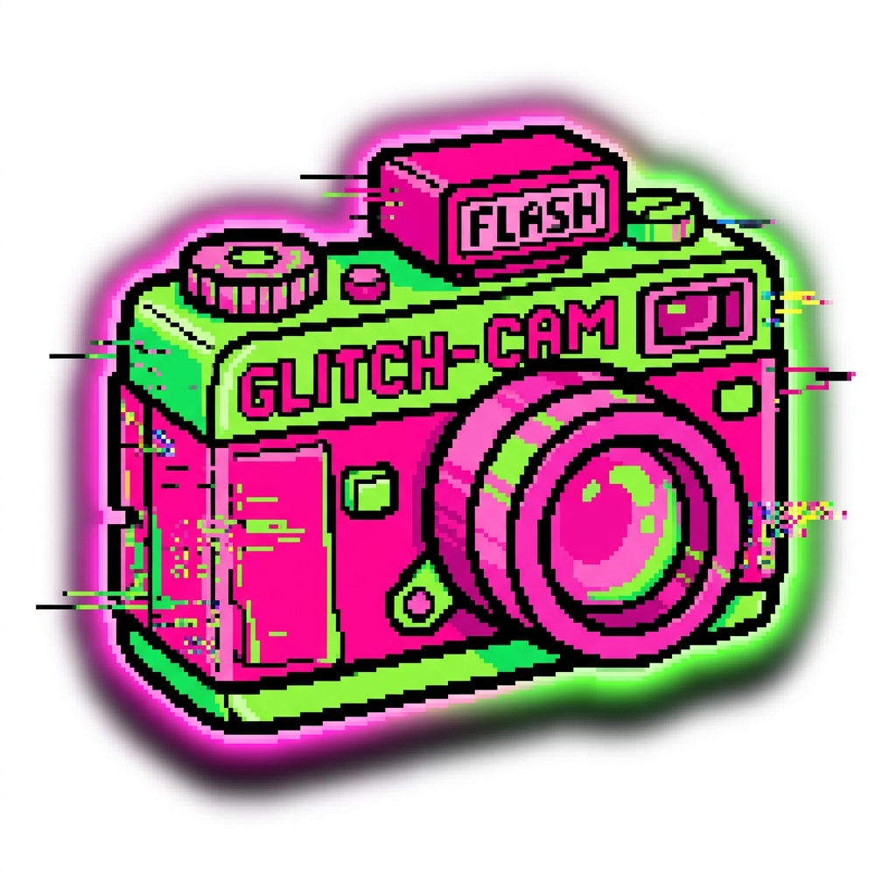
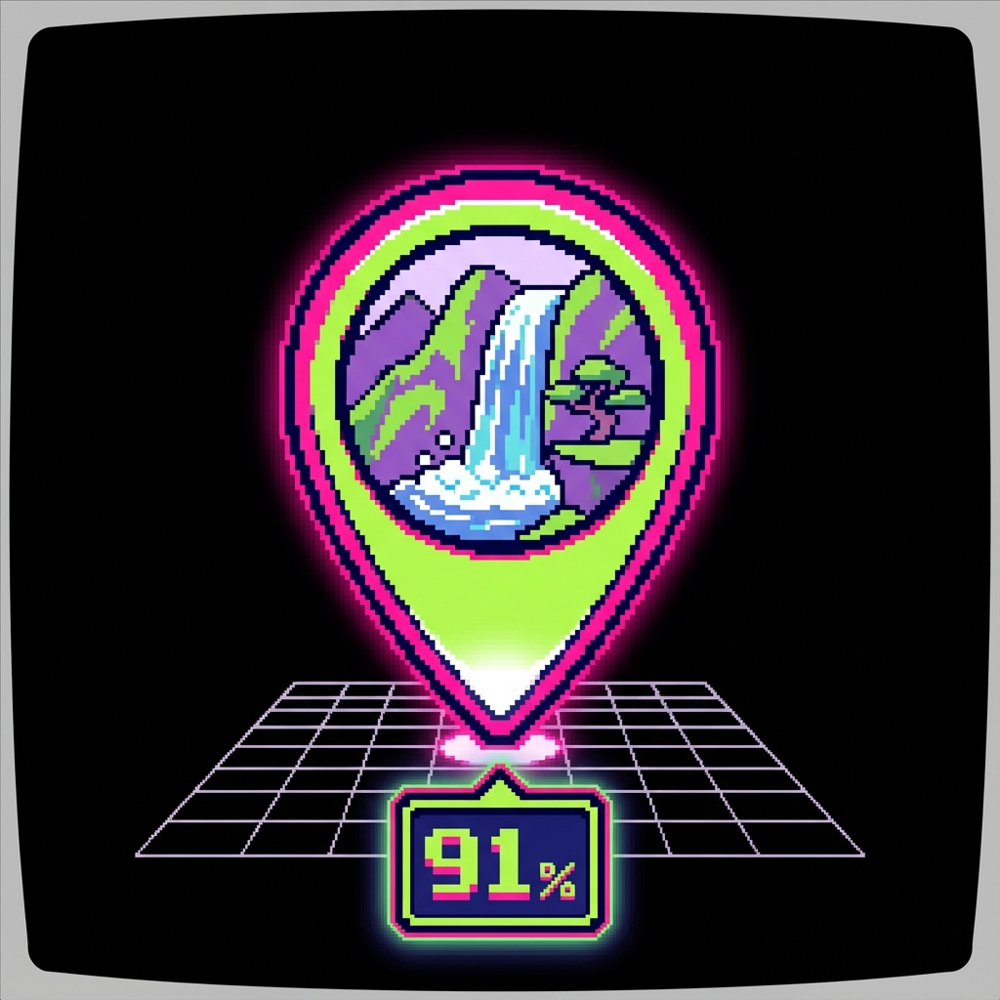
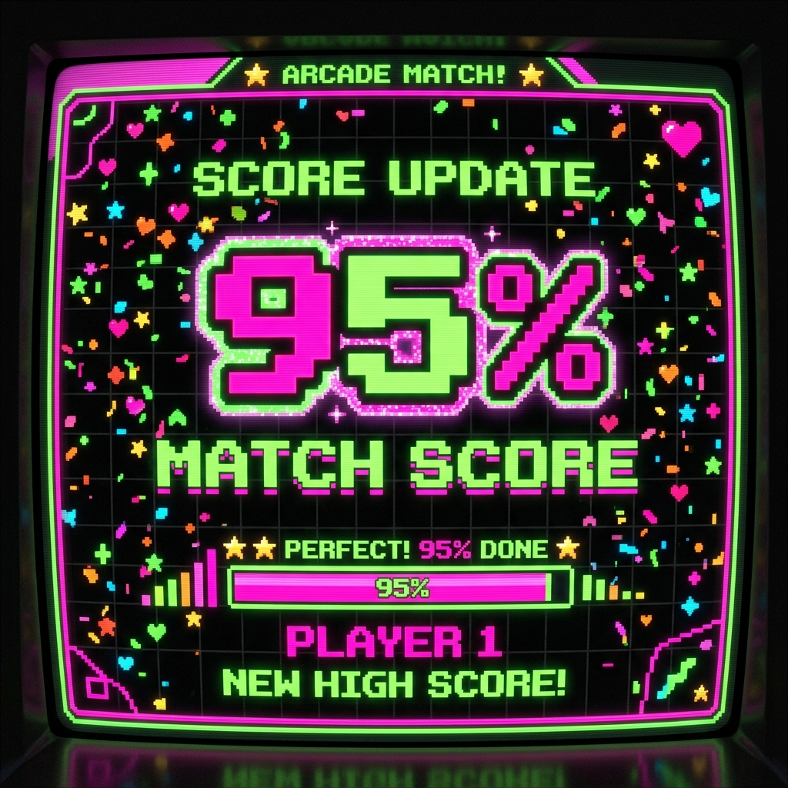

RESHOT_SUCCESS.EXE
> INITIATING BOOT SEQUENCE...
> LOADING AI POSE DETECTION KERNEL [OK]
> CONNECTING UTTARAKHAND LOCATION ENGINE [OK]
> SYNCHRONIZING CAMERA AR OVERLAYS [OK]
Stop guessing your camera angles or struggle with poses. Upload any photo, get live AR outlines guided by AI, and track down underrated hidden waterfalls, lakes, and viewpoints.

> MOVE LEFT 10 CM
> RAISE CHIN SLIGHTLY
Drag the camera view frame below to match the pose overlay guide. Can you hit the 95% perfect similarity threshold?

ReShot helps travelers spot hidden gems and tells you the exact coordinates and camera framing needed to recreate beautiful shots.

An underrated giant waterfall falling from 126m high. ReShot guides you to stand at the viewpoint bridge for a perfect backdrop layout matching.
View Route
A hidden paradise surrounded by thick forests. The ideal recreation angle requires shooting from a low height, looking upwards with a 35mm lens.
View RouteTucked away from commercial travel routes. ReShot's scene recognition identifies this spot instantly and guides you on composition framing.
View RouteLAT: 30.1254
LNG: 80.1425
ALT: 2,210m
Uses on-device MediaPipe calculations to trace skeletons of reference photos. Overlay guides you perfectly.
Reconstructs the camera height, tilt, distance, and framing boundaries automatically, signaling when you're set.
Upload new hidden locations directly with geo-tags to challenge others to recreate your exact perspective.
Join the photography recreation revolution. Download the APK directly or get it on the Play Store to start tracking hidden spots and matching poses.